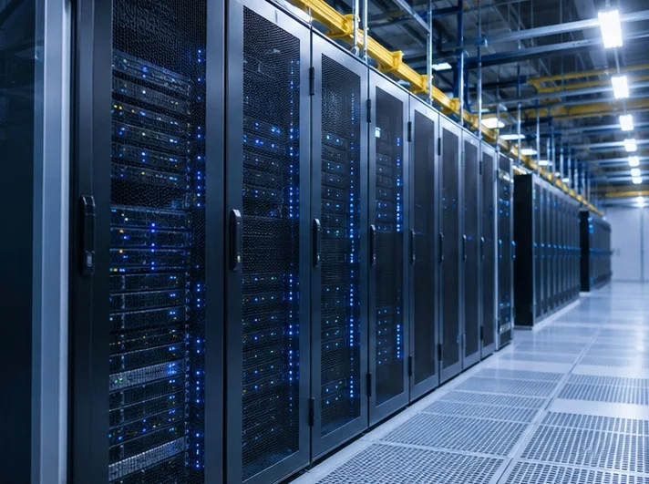

NUESTRA ESPECIALIDAD
Cloud Computing y virtualización
Diseñamos entornos de nube pública, privada e híbrida y planificamos la migración de cada carga de trabajo.
- Virtualización y consolidación de servidores
- Almacenamiento y migración de aplicaciones
- Respaldo, recuperación y pruebas de restauración
